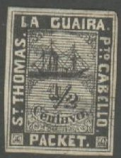
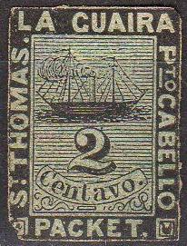
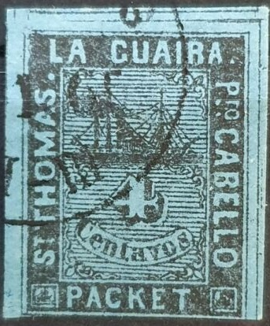
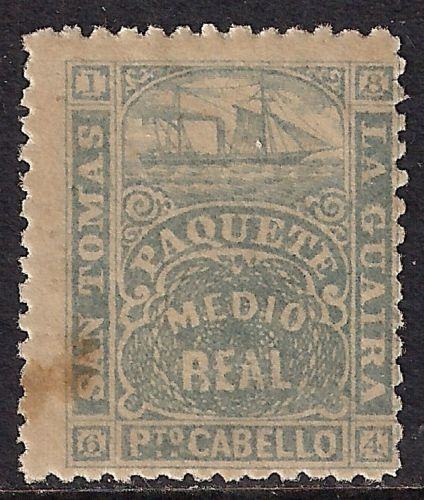
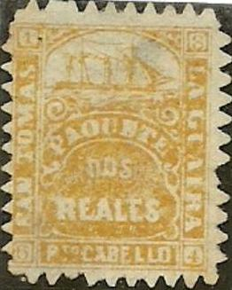
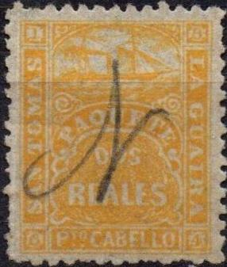
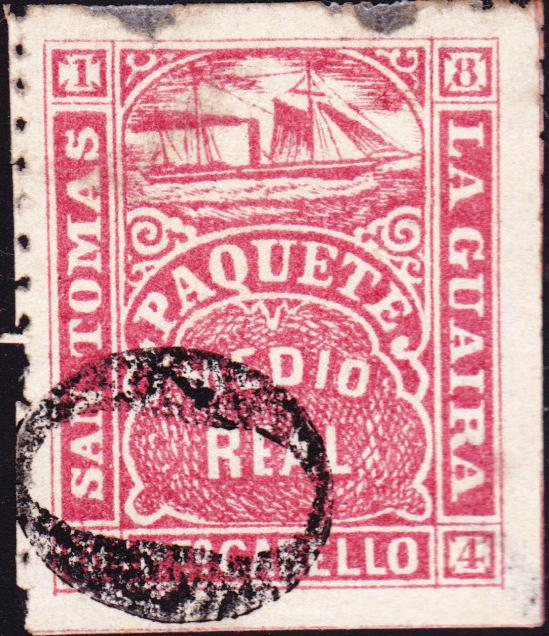
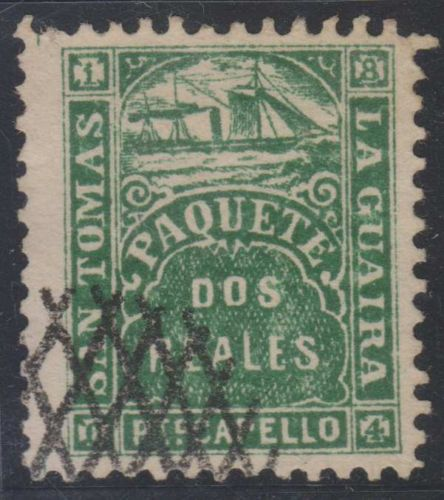
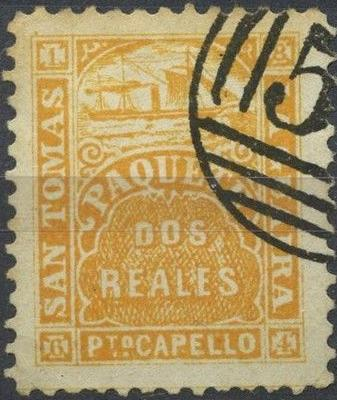
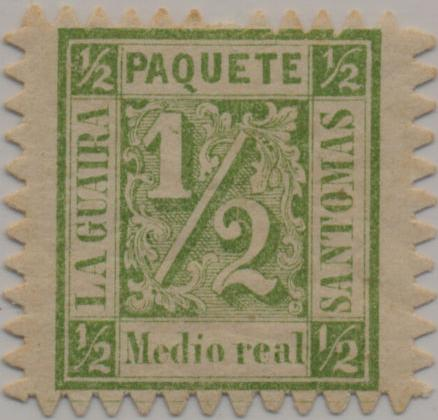

Return To Catalogue - San Tomas La Guaira, part 2 - La Guaira, Jesurun issue - Danube (Donau) Steam Ship Company
Note: on my website many of the
pictures can not be seen! They are of course present in the
catalogue;
contact me if you want to purchase the catalogue.
'The private ship letter stamps of the world Part 1 The Caribbean' by S.Ringstrom and H.E. Tester (1976?). Includes information about the forgeries, reprints, cancels etc.



1/2 c black 1 c black on red 1 c black on violet 2 c black on green 2 c black on blue 3 c black on yellow 4 c black on blue
Value of the stamps |
|||
vc = very common c = common * = not so common ** = uncommon |
*** = very uncommon R = rare RR = very rare RRR = extremely rare |
||
| Value | Unused | Used | Remarks |
| All values,except 1 c black on violet | RR | ? | |
| 1 c black on violet | RRR | ? | |
These stamps were printed twice; in 1864 and
1868. In the 1864 printing, several stones were used (one, two or
three depending on the value). Two of them without horizontal
lines across the numerals. All values of the 1868 series have the
horizontal lines. How to identify a genuine copy of this issue?
Just take a look at the L in LA GUAIRA. The horizontal bar of the
L must have a vertical stroke of color and in most cases the
horizontal lines of shading (the ones who cross the numerals in
some copies) must continue beyond the right border (easy to
see in the letters BEL of CABELLO). (Information obtained thanks
to Williams Castillo, Venezuela)
Forgeries, example:


With "FRANCO" cancel
The above stamp must be the second forgery described in Album Weeds, the word "CENTAVO" is not written in a label. There is no stop after "PACKET" or "CABELLO" (badly visible in this specimen). The cancel used among others is "FRANCO" (this cancel was never used on the genuine stamps).


The same "FRANCO" cancel used
on stamps of Rumania and Finland.

Same forgery type, but with another cancel (Spiro cancel?).

Any stamp with inscription "Centavos" (with a final
"s") is a forgery, all genuine stamps have incription
"Centavo".
The above stamps are also forgeries, however, they are not mentioned in Album Weeds.

Another forgery of the 1/2 c value.


Forgeries in a rather different design.



Forgery with a very different ship.

Forgery with 'CORREOS 7.1.60. II-III'
forged cancel.
There exists some 1976 facsimiles of all values in small sheetlets. They were distributed with the book: 'The private ship letter stamps of the world Part 1 The Caribbean' by S.Ringstrom and H.E. Tester. These 'reprints' can easily be recognized when investigated with a magnifying glass; the design consists of small dots.
 


Printed in London, these stamps are normally perforated.



Locally printed stamps; the lettering is slightly different.
There are also two subtypes with or without tail in the 'Q' of
'PAQUETE'. These stamps are either rouletted (rare) or sawtooth
perforated.
1/2 r red 1/2 r blue 2 r green 2 r orange
There are two types of these stamps, those lithographed by Waterlow & Sons in London were printed first in July 1864. They are perforated 13. In October 1864 Felix Rasco of Caracas Venezuela printed these stamps locally rouletted or with sawtooth perforation. See also: http://www.mostlyclassics.net/philatelic/StThomasEtcShipLocalStamps.pdf. Since the real had a different value in Venezuela (La Guaira, Caracas and Puerto Cabello) on the one hand and St.Thomas on the other hand, two different colors were used for each stamp. The 1/2 r red and 2 r green were used from Venezela (La Guaira, Caracas and Puerto Cabello) to St. Thomas. The 1/2 r blue and 2 r orange were used in the other direction (from St.Thomas to the other cities). The sawtooth perforated stamps were reprinted with worn plates (but are still quite rare).
Value of the stamps |
|||
vc = very common c = common * = not so common ** = uncommon |
*** = very uncommon R = rare RR = very rare RRR = extremely rare |
||
| Value | Unused | Used | Remarks |
| 1/2 r red | R | R | |
| 1/2 r blue | R | R | |
| 2 r green | *** | *** | |
| 2 r orange | *** | R | |
There are 5 subtypes of the Waterlow printed stamps:
Subtype 2 of the Dos Reales stamp, it has the
"N" of "SAN" connected to the outer frame by
a white line.
Cancels
A "50" numeral English arrival cancel.
"CORREOS CARACAS" cancels

"CORREOS LA GUAIRA"
"Adm DE CORREOS LA GUAIRA" cancel

'Dots in a circle' cancel

Manual cancel "N" from "John Nolting".

Manual cancel "RT" from the ship captain Robert Todd.

Another pencancel.
Some numeral cancels also exist (based on the weight as used in Venezuela), the following numbers are know '0', '2 1/2', '5' etc. The number '0' was forged on the forgeries of Spiro.


'0', '5' and '2 1/2' cancel on stamps of Venezuela as they can
also occur on stamps of this issue. On the Paquete stamps, they
were used in Puerto Cabello, since this town did not have a
circular town cancel at that time (this usage is rather rare).

The above Venezuelan 'star-cancel' also exists on La Guaira
stamps (sorry, no image available yet).
Stamp on letter with 'CORREOS CARACAS' and a British 'GB 1F60c'
cancel, a French arrival cancel 'ANGL PAS DE CALAIS' and a manual
'10' mark.
Forgeries
At least three types of forgeries are known. Examples:


The above stamps are probably Spiro forgeries. The "S" of "TOMAS" has a dent on top in these forgeries. There are dividing lines between the stamps, which do not exist in the genuine stamps. Note the bogus cancels on the above forgeries that immediatly identifies them. The following forgeries have a more deceptive "O" cancel (this cancel was also used on some genuine stamps!):

Forged '0' cancel.
Perhaps another Spiro forgery? It is very similar to the above
forgeries, but the design is slightly different (as is the
cancel?).
 
Second forgery type, note the bogus cancel!

This might actually be a remainder (from worn plates), although
it was offered as a forgery. On the other hand, the perforation
is not a sawtooth one, but a normal one.
A forgery with very wide margins.

Essays or bogus issue probably made in 1870? With numerals in the
centre; "Media real" green, "Un centavo"
yellow and "DOS reales" blue. The value 2 reales red
also seems to exist. They are probably printed by the same
printer who made the 1864 issue, since the perforation method is
the same as the locally printed stamps of that issue. They are
very rare.

For stamps of this issue, click here.


{kind=link}
{kind=link}
{kind=link}
{kind=link}
{kind=link}
{kind=link}
{kind=link}
{kind=link}
{kind=link}
{kind=link}